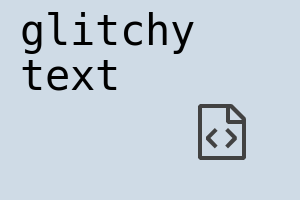

<web labs/>
This is a simple site I will use for cool experiments with web technologies. Anything cool I find on the web or make myself I put here. Most of the things here will be expanded on one day when I find some time.
I wanted to make it all fancy with automatically generated links and code coloring, so this website requires javascript and a modern browser to work.
One day when I find some time, I'll turn this site into a static one without that much javascript, but that will be some time in the future when I find time to set it up to work nicely with github's CI.
This image uses svg filters to achieve a cool glitch effect. A lot can be achieved with svg filters, and almost every browser supports them, so you don't have to worry about something looking dissimilar on a different browser.
